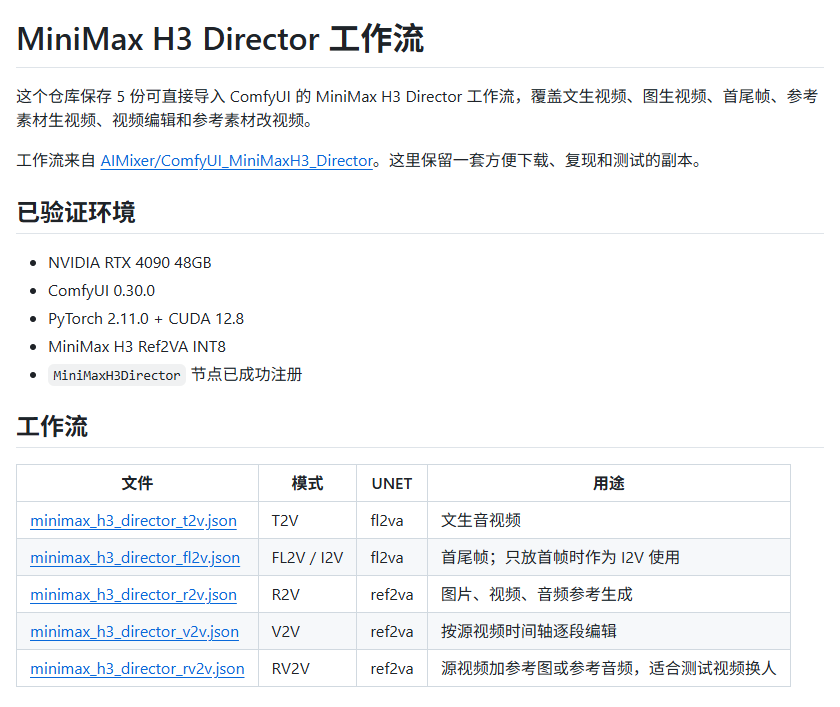

原帖
还在 ComfyUI 里手搓 MiniMax H3 节点？有人已经把整套工作流搭好了。
直接拖进去就能用，5 种玩法基本覆盖常见视频生成：
① T2V：文生音视频
② FL2V / I2V：首尾帧、图生视频
③ R2V：图片、视频、音频做参考
④ V2V：按时间轴分段修改
⑤ RV2V：源视频 + 参考图进行换人测试比较实用的是分段运行 + 缓存，只改一段，不用整条视频重新跑。
要求也简单：ComfyUI 0.30.0+。不过人物一致性没有硬锁，效果还是得自己检查。
🔗 github.com/huangserva/ComfyUI_MiniMaxH3_Director
—— lumxss（@bkdgiffug），2026-10-09

核对：帖子里的 5 种模式、ComfyUI 0.30.0+ 的版本要求、“分段运行 + 缓存”和“没有硬身份锁”都能在 README 中找到对应原文。需要补充一点：帖子说“有人已经把整套工作流搭好了”，而 README 写明这些工作流来自上游 AIMixer/ComfyUI_MiniMaxH3_Director，huangserva 仓库保存的是一份方便下载、复现和测试的副本。
这是什么
这个仓库保存 5 份可直接导入 ComfyUI 的 MiniMax H3 Director 工作流，覆盖文生视频、图生视频、首尾帧、参考素材生视频、视频编辑和参考素材改视频。
工作流来自 AIMixer/ComfyUI_MiniMaxH3_Director。这里保留一套方便下载、复现和测试的副本。
（整理者注：5 份 JSON 结构相同，每份 11 个节点：UNETLoader、CLIPLoader、VAELoader、核心 MiniMaxH3Director，以及 CreateVideo / SaveVideo / PreviewAny 输出和一张 MarkdownNote 说明。）
已验证环境
- NVIDIA RTX 4090 48GB
- ComfyUI 0.30.0
- PyTorch 2.11.0 + CUDA 12.8
- MiniMax H3 Ref2VA INT8
MiniMaxH3Director节点已成功注册
5 份工作流
| 文件 | 模式 | UNET | 用途 |
|---|---|---|---|
| minimax_h3_director_t2v.json | T2V | fl2va | 文生音视频 |
| minimax_h3_director_fl2v.json | FL2V / I2V | fl2va | 首尾帧；只放首帧时作为 I2V 使用 |
| minimax_h3_director_r2v.json | R2V | ref2va | 图片、视频、音频参考生成 |
| minimax_h3_director_v2v.json | V2V | ref2va | 按源视频时间轴逐段编辑 |
| minimax_h3_director_rv2v.json | RV2V | ref2va | 源视频加参考图或参考音频，适合测试视频换人 |
安装
需要 ComfyUI 0.30.0 或更高版本，并安装上游导演台节点：
cd ComfyUI/custom_nodes
git clone https://github.com/AIMixer/ComfyUI_MiniMaxH3_Director.git
python -m pip install -r ComfyUI_MiniMaxH3_Director/requirements.txt重启 ComfyUI，将 example_workflows/ 里的 JSON 拖进页面。
模型要求
T2V、I2V、FL2V 使用：
models/diffusion_models/minimax_h3_fl2va_pruned_int8_convrot.safetensorsR2V、V2V、RV2V 使用：
models/diffusion_models/minimax_h3_ref2va_pruned_int8_convrot.safetensors共用组件：
models/text_encoders/qwen3vl_32b_minimax_h3_nvfp4_awq.safetensors
models/vae/minimax_h3_video_vae_fp16.safetensors
models/vae/minimax_h3_audio_vae_fp32.safetensorsCLIP Loader 的类型选择 minimax。
RV2V 视频换人
- 导入 RV2V 工作流。
- 上传源视频，按镜头切分或使用智能分割。
- 上传人物参考图；需要声音约束时再加参考音频。
- 每段分别写提示词。源片段会绑定为
<Video 1>，参考素材使用<Picture N>、<Audio J>。 - 先生成 5 秒，检查脸部、服装、动作和镜头边界，再决定是否扩展。
导演台支持逐段选择运行和缓存，改一段时不必重跑整条时间轴。音频可以选择模型生成、沿用原声或静音。
使用说明
- 当前已验证的 4090 环境只有 Ref2VA，可直接运行 R2V、V2V、RV2V。
- T2V、I2V、FL2V 需要补齐 fl2va 权重。
- 人物身份由模型和参考素材共同约束，导演台没有硬身份锁。
- 段间引导采用上一段末帧到下一段首帧的交接，不能替代人物一致性检查。
- 做 A/B 测试时固定源素材、提示词、seed、分辨率、帧数和 steps。
也就是说，README 里“已验证”的只有 Ref2VA 这一半（R2V / V2V / RV2V）；T2V、I2V、FL2V 三份工作流在作者的测试环境中没有跑过。
SageAttention（可选）
安装 SageAttention 后，可将补丁节点放在 UNETLoader 与 MiniMaxH3Director 的 model 输入之间。先确认输出质量一致，再记录速度变化。
上游插件：MiniMaxH3Director 导演台
真正干活的节点是上游 AIMixer/ComfyUI_MiniMaxH3_Director（Apache-2.0）。以下摘自其中文 README，帮助理解 5 份工作流背后的节点：
基于 ComfyUI 官方 MiniMax-H3 的多段音视频导演台插件。……把分段计划、条件编码、采样解码和导出整合在一个节点里。底层走官方MiniMaxH3ImageToVideo/MiniMaxH3ReferenceToVideo+MiniMaxH3SigmaShift+KSampler+ AV 分离解码链路，原生输出立体声音频。
- 多段时间轴：节点内上传视频，支持切分、均分、智能分镜分割（PySceneDetect）、追加，可视化预览每段范围与缩略图。
- 选择运行：只采样勾选的片段或素材组；未勾选的段可用缓存或源画面填充。分段缓存落在
output/minimax_seg_cache/下。 - 段间引导：默认关闭；开启后把上一段生成结果的末尾运动（及音频）钉入下一段采样，上下文帧数可选 5 / 22 / 39 / 56，默认推荐 22。
- 默认采样参数：画布 0.4MP 16:9（864×480），5 秒 / 124 帧 @ 24 fps；25 steps，
res_multistep+simple，CFG 1.0；Sigma shift video 12 / audio 3。 - 依赖：ComfyUI 升级到 v0.30.0 及以上（含官方 MiniMax H3 节点）；
scenedetect、opencv-python-headless、imageio-ffmpeg为可选依赖。 - 另有外部多组接线、语义桥（Semantic Bridge）、渐进一采（SelfLift）、二采/放大（Refine）、导演包导入导出等进阶功能，详见上游 README。
版本差异提醒：huangserva 的副本停在 2026-08-04 的单次提交，上游一直在更新（本页抓取时最新提交为 2026-10-09）。上游 example_workflows/ 现有 9 份工作流（多了外部多组 I2V / R2V、二采加速、加速版），同名的 5 份 JSON 也已经和副本不一样。想用新功能，建议直接从上游取工作流。上游 README 另附模型/工作流整合包（Comfyit 搅拌站 文章 506）和 B 站教程合集，这两处是上游作者自己的站点和频道。
来源与许可
- 上游插件：AIMixer/ComfyUI_MiniMaxH3_Director
- MiniMax H3 权重：Comfy-Org/MiniMax-H3
- ComfyUI 文档：MiniMax H3 工作流
工作流与上游插件按 Apache-2.0 许可发布，详见 LICENSE。模型权重遵循各自的许可条款。